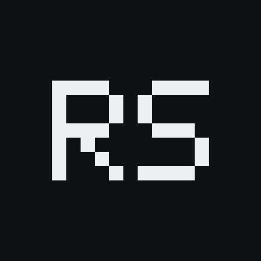
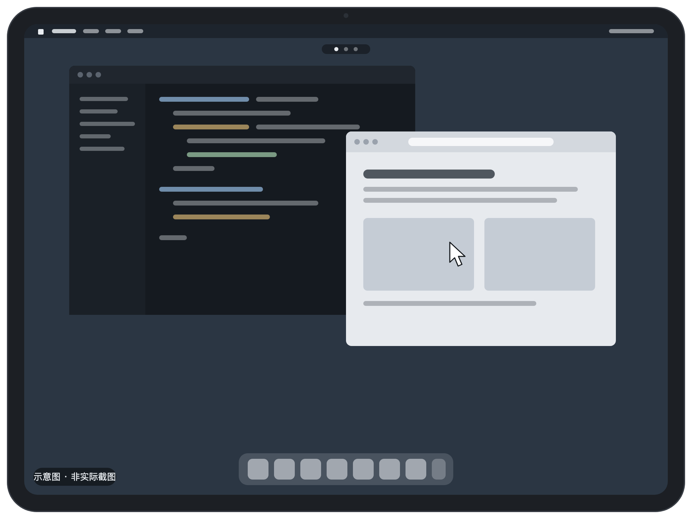
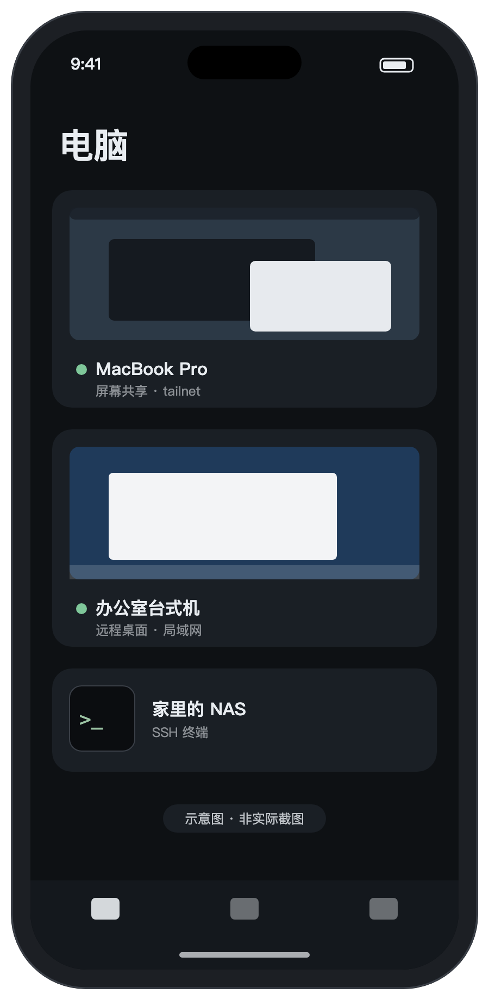
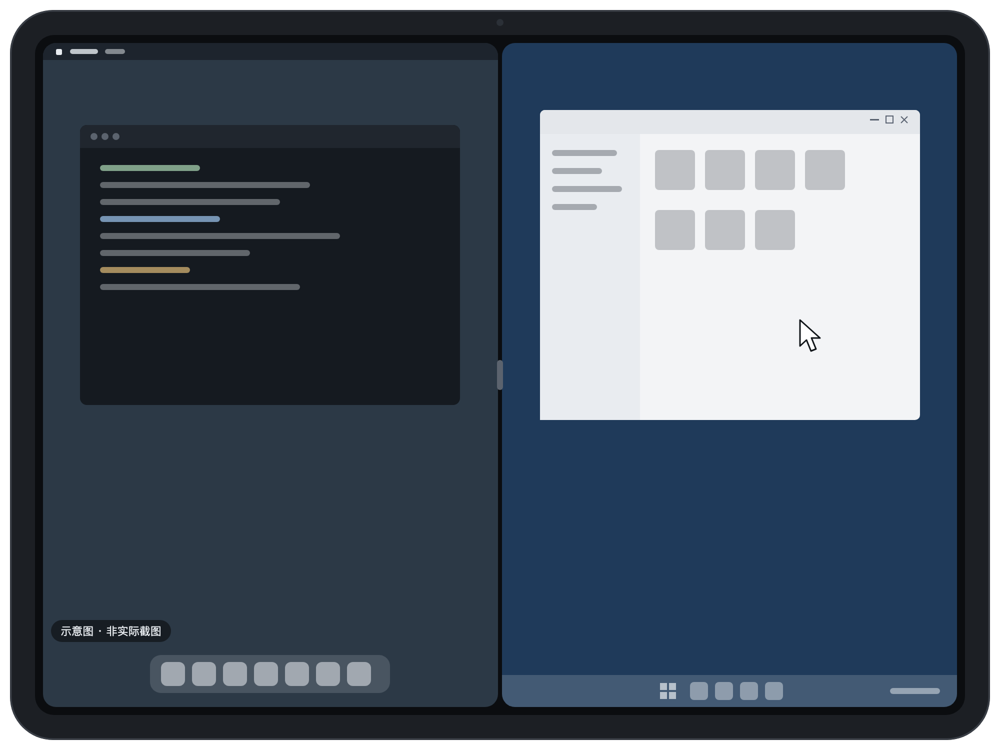

Mac：系统自带的「屏幕共享」
在 Mac 的共享设置里打开屏幕共享，用这台 Mac 的用户名和登录密码就能连接。同一网络里打开了屏幕共享的 Mac，App 会自动找到。

在 iPad 和 iPhone 上，用你自己的 Mac 和 Windows 电脑。电脑上不用装软件，在外面也能连回家里和公司。

No install
远屏直接连接电脑系统自带的远程功能。打开一个开关，就能从 iPad 或 iPhone 连上去。
在 Mac 的共享设置里打开屏幕共享，用这台 Mac 的用户名和登录密码就能连接。同一网络里打开了屏幕共享的 Mac，App 会自动找到。
在 Windows 设置里打开远程桌面，用 Windows 账户和密码登录。支持播放电脑的声音。
Remote Host 是可选的电脑端程序，有 Mac 和 Windows 版。装上以后，远屏改用自己的协议连接，多出这些能力：
Tailnet
远屏内置 Tailscale / Headscale 组网。电脑和 iPad 加入同一个 tailnet，就能像在同一个局域网里一样连接，不用在路由器上做端口转发。

iPad
接上键盘和触控板，iPad 就像一台连着那台电脑的显示器。

按键和快捷键直接发给电脑。少数会被 iPadOS 拦下的组合，比如 Command-Tab、Command-空格、Alt-Tab，工具栏里点一下就能发过去。
用触控板或鼠标操作电脑上的指针。全屏时可以锁定指针，像在电脑前一样移动。
每台电脑可以单独占一个系统窗口。用分屏把两台电脑并排放，一边看一边操作。
同时连着几台电脑时，三指左右滑动在它们之间切换，就像 Mac 上的多个桌面。
电脑接了几块屏，就能选看哪一块。
同一个 App 支持 iPhone，临时处理一下事情也方便。
More
直接打开电脑或服务器的命令行，支持在 App 里管理 SSH 密钥。
电脑上复制的内容同步到手机；手机上的文字可以发到电脑粘贴，不能粘贴的登录框也能「粘贴为键入」。
通过远程桌面或 Remote Host 连接时，可以在 iPad 上播放电脑的声音。
在观看模式下回到主屏幕，用小窗继续看电脑的画面。
把一次远程会话录下来，加密保存在这台设备上，可以回放和导出。
可以设置用 Face ID 解锁 App。锁定时不显示远端画面，验证只在设备上完成。
Privacy
画面、键盘鼠标、剪贴板和声音直接在你的设备和电脑之间传输。开发者不运营任何接收这些数据的服务器。
记住的密码和 API 令牌存在系统钥匙串里，不同步到其他设备。设备身份密钥和 SSH 私钥在支持的设备上由安全隔区保管，不离开这台设备。
不用注册，不含广告和第三方统计 SDK。日志和崩溃记录只存在本机，除非你自己导出分享。
FAQ
如果在屏幕共享的选项里设了 VNC 密码，也可以只用这个密码连接。注意：通过屏幕共享连接时，剪贴板只支持英文和符号，中文请在电脑上输入。
Windows 专业版、企业版和教育版带有远程桌面；家庭版没有这个功能。远程桌面连上后，电脑本机的屏幕会锁上。
用 tailnet。让电脑和 iPad / iPhone 加入同一个 Tailscale 或 Headscale 网络：
整个过程不用在路由器上做端口转发，也不用把电脑暴露在公网上。
不用。只用系统自带的屏幕共享或远程桌面就能完整地远程控制电脑。Remote Host 是可选的，装上后能用更好的画质、多显示器与虚拟屏、文件收发等功能。
看 支持页面，或者直接发邮件给开发者。